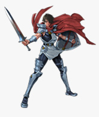

もともと任天堂社内で、ＤＳ用の正統派ＲＰＧを制作しようという企画がありました。さまざまな候補を検討していたのですが、初めてＲＰＧを触るプレイヤーにも楽しめて、なおかつファミコンやスーパーファミコンでＲＰＧを経験された方も楽しめるタイトルがいいのではということで案を絞っていきました。そんな中で、内容やクオリティの面でベストだったのが『ヘラクレスの栄光』だったんです。元のシリーズが通常のＲＰＧに比べてオリジナリティが強かったですし、その個性の強さが、タッチパネルや２画面というＤＳの独自性と相性がいいのではないかと判断したからです。ただし、『ヘラクレスの栄光』は任天堂のタイトルではなかったので、版権を持っていらっしゃるパオンさんとパオンさんの制作チームを率いていらっしゃる近藤さんに制作協力をお願いすることになりました。